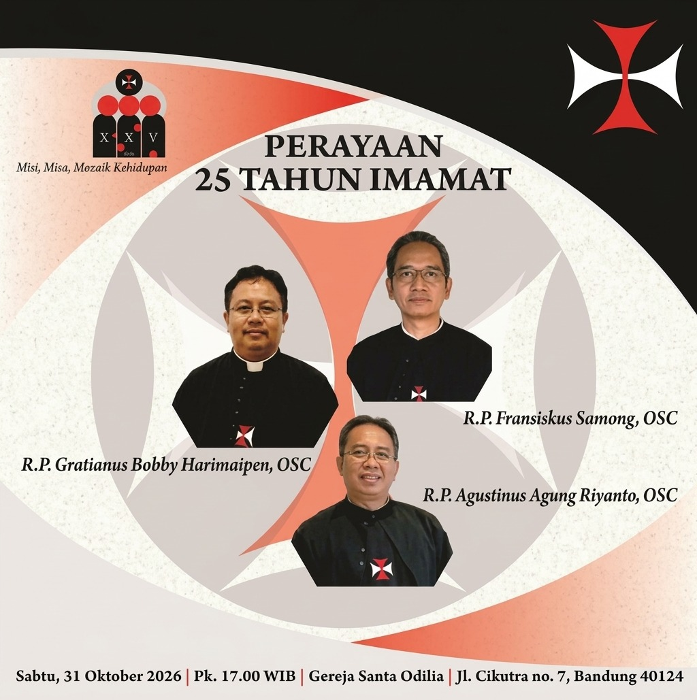

Mengucap Syukur atas Imamat:
Sabtu, 31 Oktober 2026
Pk. 17.00 - 21.00 WIB
Gereja Santa Odilia & SD St. Yusup
Jl. Cikutra No. 7, Bandung 40124
Pk. 17.00 WIB - Perayaan Ekaristi
Pk. 19.00 WIB - Ramah Tamah
Ayo segera isi formulir kehadiran Anda!
Isi Formulir